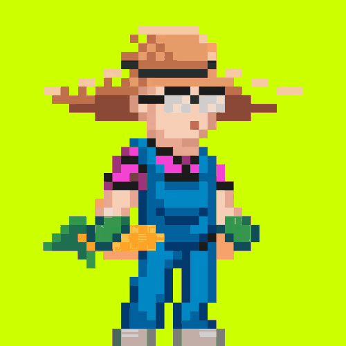
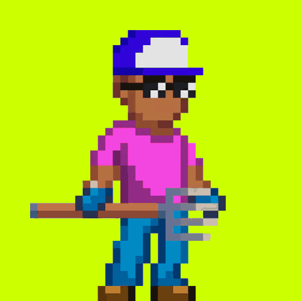
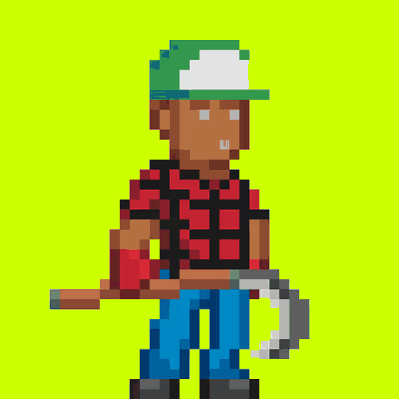
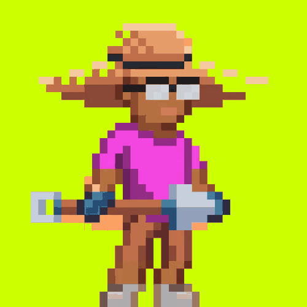
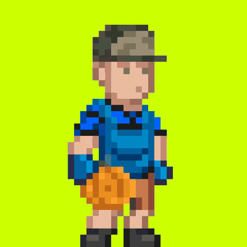
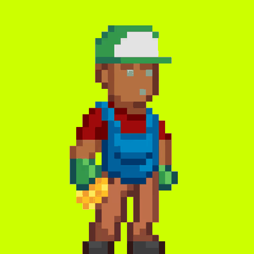
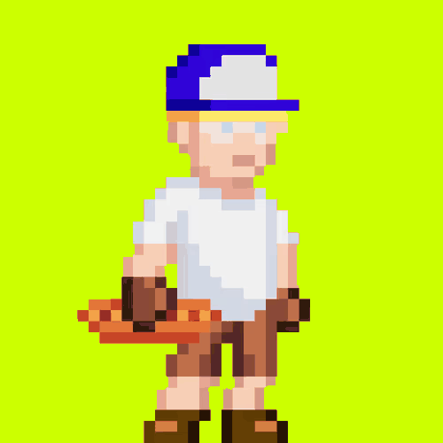

Two thousand pixel farmers. Each turns up with its own cap, its own tool and something from the harvest in hand.

Eighteen of the two thousand are out working today. Shake the field to see who else shows up.
Every farmer grabs a tool and something from the harvest before heading out.






Up top it is straw hats, hard hats, camo and ball caps, with or without shades.
Thirty seconds on the plots, the pens and the farmhouse. Tap a chapter to jump to it.